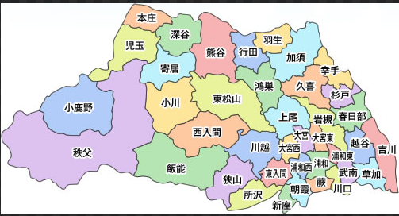

画像ファイルを assets/saitama_map.png として配置するとここに表示されます。

地図画像が見つかりません
対応方法
このページと同じフォルダ（assets/）に saitama_map.png を置いてください。
置いた直後は、元の画面に戻ってからもう一度「埼玉県」をクリックすると再読み込みされます。
ひとまず下は、現在のエリア区分（東部/西武/南部/北部/秩父）の概略図です。